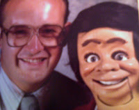

Fire restoration?
11/8/2009
{kind=link}

Question: Did you make Jake for me around 1974? If you did/or not, could you make one for me close to his looks? Moving self center eyes, eye brows that move and he would not need to have the eyes that blink. I lost Jake in a fire and would like him back. Respectfully Yours, Dennis Gutke
* * * * * * *
Answer: I believe your Jake was a carved basswood figure that was sold by Maher Workshop in California. At the time of your purchase of Jake the California workshop was owned by Craig Lovik, then later sold to Chuck Jackson who went out of business several years later (late 1980s, I believe). As a result, no one is making that character today. You could watch eBay for a similar character, but honestly, that's a real long shot. Craig's son, Keith, is still building latex molded figures. Whether he could make you something similar or not, I don't know, but you can contact him here: info@lovikspuppets.com (Craig has long since left the figuremaking business.)